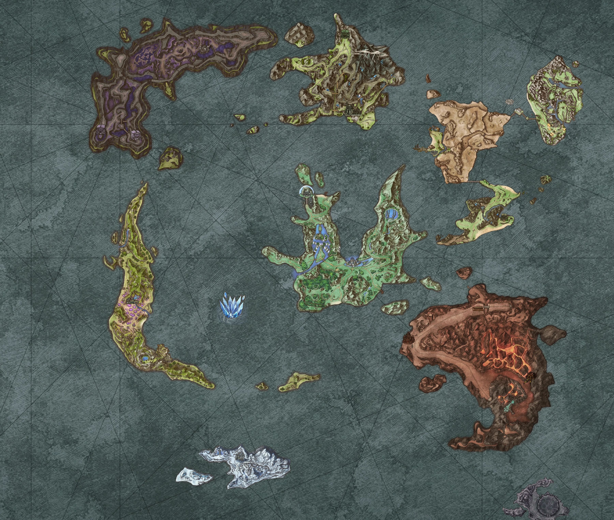

Avant de partir
Introduction : tout comprendre avant de commencer

Jaquette © Square Enix. Guide non officiel.
L'essentiel
- Ce qu'il faut savoir : tout l'équilibrage du jeu repose sur une seule mécanique, la barre de Choc. Frappe la faiblesse élémentaire, l'ennemi s'effondre ; frappe une résistance, la barre remonte.
- La seule chose à faire : suivre les parties 01 à 10 dans l'ordre des chapitres. Le jeu est linéaire, et le guide aussi.
- Le piège n° 1 : confondre le Fragment de tablette et le Fragment de magilithe. Le premier ouvre des coffres, le second éveille tes Visions.
- Le réflexe : fais tourner tes Visions dès le chapitre 2. C'est ce qui débloque les éléments, les rôles, et la plus longue série de trophées du jeu.
La carte interactive
Zoome, déplace-toi et touche un repère : il t'emmène à l'endroit du guide qui en parle.

· molette ou pincement pour zoomer, glisser pour se déplacer ; touche un repère pour voir ce que c'est et ouvrir la partie du guide qui en parle.
Objectif
Te donner en une lecture ce que Final Fantasy Resonance n'explique pas : comment lire la barre de Choc, à quoi servent vraiment les 26 Visions, pourquoi tu n'as pas de magie de Foudre avant le chapitre 4, et les dix erreurs qui coûtent le plus de temps.
Ce guide couvre tout : le prologue et les huit chapitres, les 26 Visions, les 9 Chimères, les 33 quêtes annexes, les 9 énigmes de donjon, les 12 armes légendaires, les 8 armes forgées, les 15 ennemis des grottes, les 20 combats du Colisée, l'après-jeu jusqu'à Oméga et ses 9 999 999 points de vie, et les 40 trophées PS5.
Itinéraire
- 📍 Les sources du guide : la version française du wiki du jeu pour les noms officiels et les soluces, les guides français de Gameblog et de Gaming Deputy pour les Visions, les Chimères et les quêtes, la page PlayStation officielle et le PlayStation Blog France pour les faits du jeu, et PowerPyx pour les trophées. Le détail est dans
SOURCES.md.
Le guide se lit dans l'ordre, et il est découpé en quatre blocs :
| Parties | Ce qu'on y trouve |
|---|---|
| 01 à 10 | Le prologue et les huit chapitres, objectif par objectif, coffre par coffre |
| 11 à 17 | Les collections et les systèmes : Visions, Chimères, quêtes, énigmes, combat, statistiques, héros |
| 18 à 21 | L'équipement et les contenus annexes : forge, armes légendaires, boss rares, Colisée |
| 22 à 24 | L'après-jeu, le farm et les trophées |
| 99 | Les annexes : index, manquables, check-list finale |
Les parties de chapitre renvoient aux parties de système au moment où elles deviennent utiles. Tu n'as donc pas besoin de lire les parties 11 à 24 d'avance : elles t'attendent.
Déroulé pas à pas
Avant de lancer la partie
- Transfère ta sauvegarde de démo si tu as joué à la démo gratuite. Elle contient le chapitre 1 en entier, et la sauvegarde est transférable dans le jeu complet.
- Choisis une difficulté sans y réfléchir trop longtemps. Facile, Normal et Expert proposent le même contenu, la difficulté se change à tout moment dans les Options, et aucun trophée n'en dépend.
- Sache que l'Expert ne sert qu'aux PRM. L'expérience et les gils sont identiques dans les trois modes ; seuls les points de maîtrise des Visions montent, avec un ×1,5.
La première heure
- Traverse le prologue sans t'attacher : tu joues Dark Fina au niveau 55, et dans dix minutes tu seras Rain au niveau 1. Partie 01.
- Lis les six leçons du manuel Comment jouer que le prologue débloque. Deux comptent vraiment : Faiblesses et Limites.
- Prends le réflexe du chiffre de Choc. Avant chaque attaque, le jeu affiche combien de Choc elle va retirer. C'est l'information la plus utile de l'interface, et presque personne ne la regarde.
- Équipe ta première Vision quand le jeu te le demande, objectif 6 du chapitre 1.
Les habitudes à prendre tout de suite
- Fais tourner tes Visions. Une Vision monte en étant équipée, et le trophée Expert en visions demande huit Visions au rang de maîtrise maximum. Changer de Vision tous les deux chapitres coûte zéro effort ; rattraper huit Visions en fin de partie coûte des heures.
- Lance une Résonance à chaque Action bonus. C'est gratuit — une action en plus, pas à la place — et le trophée Adepte des résonances en demande 400.
- Ramasse les Fragment de tablette, même si tu ne comprends pas encore à quoi ils servent. Il y en a 99, répartis dans 48 lieux, et ils ouvrent les 25 coffres du Palais de l'Oubli.
- Ne vends jamais une Adamantite. Il y en a exactement huit dans le jeu, pour huit armes forgées.
- Prends toutes les quêtes annexes qu'on te propose. Aucune n'expire, et huit d'entre elles donnent +100 PV et +30 PM permanents à un héros.
- Ne farme pas. Le scénario entier se termine sans farmer, et un combat du chapitre 7 rapporte cinq cents fois plus qu'un combat du chapitre 1.
Quêtes et lieux
La fiche du jeu
| Titre | Final Fantasy Resonance |
| Développement | Lancarse et Square Enix |
| Éditeur | Square Enix |
| Réalisation | Hiroto Furuya |
| Production | Keisuke Nakashima |
| Scénario | Yukinori Kitajima |
| Musique | Noriyasu Agematsu |
| Moteur | Unreal Engine 5 |
| Sortie | 22 octobre 2026 |
| Plateformes | PS5, Xbox Series X/S, Nintendo Switch, Switch 2, PC |
| Genre | RPG japonais au tour par tour, solo |
| Éditions PS5 | Standard 59,99 €, Digital Deluxe 69,99 € |
| Langues | Textes en français, voix en anglais et en japonais |
| Démo | Gratuite, le chapitre 1 en entier, sauvegarde transférable |
| Accueil | 86 sur 100 au Metacritic PS5, 90 % de recommandations sur OpenCritic |
C'est le premier jeu HD-2D de la série Final Fantasy : du pixel art en haute définition, avec une caméra dynamique et des modèles 3D rendus en pixels. Même l'introduction est en 3D pixelisée.
Et c'est une adaptation, pas un portage : le jeu reprend le premier arc scénaristique — l'arc Lapis — du jeu mobile Final Fantasy Brave Exvius de 2015, et en fait un RPG solo complet, sans gacha. La bande-son compte 120 morceaux, dont 87 repris de Brave Exvius et 33 nouveaux.
Les cinq systèmes à comprendre
1. La barre de Choc, qui décide de tout
C'est la mécanique du jeu. Frapper la faiblesse élémentaire d'un ennemi vide sa barre de Choc beaucoup plus vite qu'une attaque neutre. Et quand elle est vide, trois choses arrivent :
- l'ennemi perd son tour ;
- ses défenses baissent ;
- son attaque dévastatrice est annulée.
Ce troisième point est la clé de presque tous les boss du guide. Souffle écrasant de Tellus, Dystopie de Dark Fina, Avale de Goulu : toutes disparaissent si tu étourdis au bon moment.
Le piège symétrique : frapper une résistance n'avance pas la barre, et peut la faire remonter. Détails en partie 15.
2. Les Visions, qui font ton équipe
Une Vision est l'écho d'un héros de la série Final Fantasy, que tu équipes sur un de tes personnages. Elle lui donne des attaques, des compétences, un rôle et souvent une affinité élémentaire.
Il y en a 26 : 16 dans des sanctuaires de cristal, 7 par des quêtes annexes, 2 offertes par l'histoire, et Séphiroth qu'il faut battre. Elles montent avec les PRM et s'éveillent avec les magilithes. Partie 11.
Pourquoi c'est obligatoire et pas décoratif : tes huit héros ne couvrent pas les huit éléments en même temps. Au chapitre 3, quatre boss sur cinq sont faibles à la Foudre et aucun héros disponible ne la porte.
3. Les Chimères, les invocations
Neuf au total, et c'est Fina qui les appelle. Une invocation coûte 50 PM, agit librement pendant trois tours, puis part sur une grosse attaque.
Ce n'est pas un sort : c'est un engagement de trois tours. Inutile contre un ennemi de terrain, décisif contre un boss à six chiffres de points de vie. Partie 12.
4. Les Limites et les Résonances
Deux choses différentes, souvent confondues :
| Ce que c'est | |
|---|---|
| Limite | L'attaque ultime d'un personnage, déclenchée par sa jauge. La Limite de niveau 2, apprise plus tard, charge jusqu'à 200 % |
| Résonance | L'attaque de la Vision équipée, choisie sur une roue en losange. À garder pour les Actions bonus |
5. Les PRM, et les deux monnaies d'amélioration
| Ressource | À quoi elle sert |
|---|---|
| PRM | Monter le rang de maîtrise d'une Vision, jusqu'au 9 |
| PA | Le budget d'aptitudes équipables |
| Fragment de magilithe, Magilithe, Cristal de magilithe | Les trois éveils d'une Vision |
| Fragment de tablette | Rien à voir : il ouvre les coffres du Palais de l'Oubli |
Les huit héros
| Héros | Rôle | Éléments | Arme | Quand il arrive |
|---|---|---|---|---|
| Rain | Défenseur | Feu | Espadon | Chapitre 1 |
| Lasswell | Briseur | Glace | Katana | Chapitre 1 |
| Fina | Soigneuse | Lumière | Arc | Chapitre 1 |
| Lid | Attaquante | Terre | Marteau | Chapitre 2 |
| Nichol | Tacticien | Eau | Volume | Chapitre 3 |
| Jake | Attaquant | Vent, Foudre | Fusil | Chapitre 4 |
| Sakura | Attaquante | Foudre, Lumière, Ténèbres | Bâton | Chapitre 5 |
| Dark Fina | Saboteuse | Ténèbres | Fouet | Chapitre 5 |
Nichol est le seul Tacticien du jeu, et Rain le seul Défenseur. Détails en partie 17.
Les chiffres du jeu
| Ce qu'il y a | Combien |
|---|---|
| Chapitres, plus un prologue | 8 |
| Visions | 26 |
| Chimères | 9 |
| Quêtes annexes | 33 |
| Énigmes de donjon | 9 |
| Armes légendaires | 12 |
| Armes forgées par Aileen | 8, pour 8 Adamantite |
| Fragment de tablette | 99, dans 48 lieux |
| Lieux à coffres | 50 |
| Ennemis des grottes | 15 |
| Boss de terrain rares | 9 |
| Combats du Colisée | 20, en 4 ligues |
| Trophées PS5 | 40 — 1 platine, 4 or, 7 argent, 28 bronze |
| Niveau maximum | 99 |
| Rang de maîtrise maximum d'une Vision | 9 |
| Points de vie du dernier adversaire | 9 999 999 |
Le jargon de joueur employé dans ce guide
Ces mots ne sont pas affichés par le jeu : ce sont ceux que les joueurs emploient, et le guide les garde tels quels.
| Mot | Ce qu'il veut dire |
|---|---|
| farm | Refaire les mêmes combats pour accumuler une ressource |
| build | La construction d'un personnage : équipement, aptitudes, Vision |
| spot | Un endroit précis où farmer ou trouver quelque chose |
| buff | Un bonus temporaire que l'on se donne |
| tank | Le personnage qui encaisse à la place des autres |
| loot | Le butin, ce que laisse un ennemi ou un coffre |
| timing | Le bon moment pour une action |
| scaling | La façon dont un ennemi ou une zone s'adapte à ton niveau |
Deux termes du jeu qui portent parfois un autre nom : la barre de Choc est aussi appelée jauge de posture, et l'Action bonus phase bonus. Partie 15.
Butin exhaustif
Une introduction ne donne rien à ramasser. En revanche, voici les objets à ne jamais vendre ni négliger — ceux dont la rareté est fixe et dont la perte se paie.
| Nom exact | Pourquoi il compte | Combien il y en a |
|---|---|---|
| Adamantite | Chaque exemplaire forge une arme chez Aileen | 8, pour 8 héros |
| Fragment de tablette | Ouvre les 25 coffres du Palais de l'Oubli | 99, dans 48 lieux |
| Fragment de magilithe | Éveil 1 d'une Vision | Nombreux |
| Magilithe | Éveil 2 | Plus rare |
| Cristal de magilithe | Éveil 3 | La ressource la plus rare du jeu |
| Pièce ancienne | Donne une arme légendaire à la Chambre des armes | 12 |
| Marteau de Gaïa | Libère la Chimère Titan, donc Bahamut | 1 |
| Antenne magique | Ouvre le Radar de Mysidia, donc une Adamantite et le Pendentif de maîtrise | 1 |
| Ruban | Bloque toutes les altérations sauf la Mort instantanée | 1 au chapitre 5 |
| Queue de phénix | La seule réponse à la Mort instantanée | En vente dès 200 gils |
Conseils et pièges
Les dix erreurs de débutant
1. Taper avant de connaître la faiblesse
Frapper une résistance ne fait pas « moins de dégâts » : ça n'avance pas la barre de Choc, et ça peut la faire remonter. Contre un boss à 200 000 points de vie, c'est trois tours perdus.
Le réflexe : une ou deux attaques neutres pour découvrir la faiblesse, puis on engage. Et sur les boss revus au chapitre 7, relis la fiche : plusieurs ont changé de résistances depuis la première rencontre.
2. Dépenser les Résonances hors Action bonus
Une Résonance lancée pendant un tour normal consomme ton tour. Lancée pendant une Action bonus, elle est gratuite.
La séquence est toujours la même : mettre en Choc, encaisser l'Action bonus, dépenser la Résonance dedans.
3. Farmer pendant le scénario
Le scénario entier se finit sans farmer. Et les chiffres le disent : 300 EXP par combat au chapitre 1, 150 000 au chapitre 7. Une heure de farm au chapitre 1 vaut vingt secondes de chapitre 7.
Le farm commence après le générique, pour atteindre le niveau 75 puis 99. Partie 23.
4. Confondre tablette et magilithe
Deux objets aux noms voisins, deux usages sans rapport :
| Objet | Ce qu'il fait |
|---|---|
| Fragment de magilithe | Éveille une Vision |
| Fragment de tablette | Ouvre un coffre du Palais de l'Oubli |
Si tu ramasses des tablettes en croyant éveiller tes Visions, tu te demanderas longtemps pourquoi le menu reste vide.
5. Jouer toute la partie avec les deux mêmes Visions
Une Vision monte en étant équipée. Le trophée Expert en visions demande huit Visions au rang maximum, et les rangs 4 et 9 donnent +8 PA chacun.
Fais-les tourner — une par personnage, changées tous les deux chapitres. C'est indolore en jouant, et interminable en rattrapage.
6. Acheter le sentier de Lid
Au Mont foudroyant, au chapitre 2, Lid propose un raccourci pour 1 000 gils. Il s'ouvre gratuitement après la traversée, et tu repasseras forcément par là.
7. Monter la tour de Sirène sans Chapelet
Sirène a 20 000 points de vie et son Séduction charme ton groupe. Le Chapelet, à 1 500 gils à Grandport, annule le Charme. À ce stade c'est cher ; c'est quand même le meilleur achat du chapitre.
8. Entrer dans la Vieille ville sans faire ses courses
Au chapitre 3, franchir la porte de la Vieille ville d'Olderion ferme la ville, boutiques comprises, jusqu'à la fin de l'événement — avec trois combats imposés et un boss à 24 000 PV derrière.
9. Chercher le bon levier pendant le chronomètre
Au chapitre 2, l'évasion du chantier naval de Mobrise est chronométrée : 15 minutes, et le temps écoulé fait perdre la partie. Au milieu, un panneau de cinq leviers.
C'est le 16. Tu le sais maintenant.
10. Monter la Tour de cristal sans aptitude Ténèbres sur Rain
Le dernier combat du jeu se joue avec Rain seul, contre un adversaire faible aux Ténèbres. Et Rain n'a aucune aptitude de Ténèbres de base.
Quatre Visions la donnent : Cécil, Séphiroth et Victoria dès le départ, Shantotto après son premier éveil. Équipe-en une avant le point de non-retour.
Trois choses rassurantes
Pour finir sur une note plus légère, voici ce que ce jeu ne te fera pas :
- presque rien ne se rate définitivement. Il y a un seul vrai point de non-retour dans tout le jeu, au chapitre 8, et les 50 lieux à coffres rouvrent après la fin ;
- aucune quête annexe n'expire. Une fois apparue, elle t'attend, y compris après le générique ;
- aucun trophée n'est manquable, et une seule partie suffit pour le platine.
La seule chose à ne pas oublier est d'accepter la sauvegarde de fin de partie que le jeu propose après le générique : il n'y a pas de New Game+, et c'est elle qui ouvre tout l'après-jeu.
Comment lire ce guide
- Les ⚠️ sont des points de non-retour ou des pièges qui coûtent cher. Les ⏳ sont des manquables. Ils sont rares, et c'est volontaire : quand tu en vois un, c'est qu'il compte.
- L'encadré « L'essentiel », en tête de chaque partie, dit en quatre lignes le boss, ce qu'il ne faut pas rater, le choix important et quoi faire avant de partir.
- Le « Déroulé pas à pas » suit les objectifs du jeu, dans leur libellé français exact.
- Le « Butin exhaustif » liste tout ce que la partie contient, avec l'endroit et l'usage.
- Les renvois en gras — partie 11, partie 19 — mènent à la partie qui détaille le sujet.
Alertes
- ⚠️ Le seul vrai point de non-retour du jeu est au chapitre 8, juste après Béhémoth, dans la Tour de cristal. Tout ce qui est optionnel se termine avant — ou après le générique, avec la sauvegarde de fin de partie.
- ⏳ Accepte la sauvegarde de fin de partie proposée après le générique. Il n'y a pas de New Game+ : c'est la seule porte d'entrée de l'après-jeu, et elle ne se propose qu'une fois.
Check-list
- Sauvegarde de démo transférée, si tu en as une
- Difficulté choisie, en sachant qu'elle se change à tout moment
- Les six leçons de Comment jouer parcourues
- Réflexe du chiffre de Choc pris
- Première Vision équipée
- Habitude de faire tourner les Visions prise
- Une Résonance lancée à chaque Action bonus
- Fragment de tablette et Fragment de magilithe bien distingués
- Adamantite jamais vendue
- Toutes les quêtes annexes proposées acceptées
- Les dix erreurs de débutant lues avant le chapitre 2